조직 작동력 진단 기반 문제 해결 워크숍
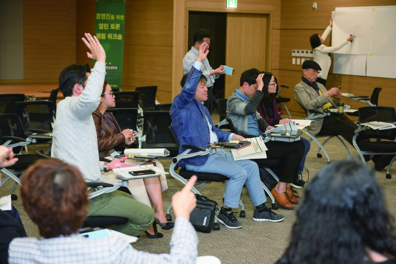
실제 워크숍 현장의 생생한 모습입니다. 참가자들이 손을 들고 적극적으로 의견을 개진하며, 화이트보드에 구조적 해결안을 직접 작성하고 있습니다. 이 워크숍은 일방적인 강의가 아닌, 참가자 전원이 주도적으로 참여하는 방식으로 운영됩니다. 감정적 토로가 아닌 데이터와 구조 중심의 토론 환경 속에서 구성원들은 자신의 조직 문제를 객관적으로 바라보고, 실질적인 개선안을 함께 도출합니다. 현장의 역동성이 조직 변화의 첫걸음을 만들어냅니다.
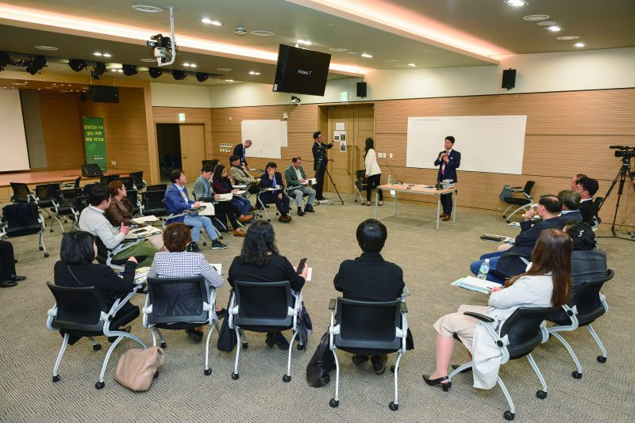
워크숍 타운미팅 세션의 전체 발표 장면입니다. 참가자들이 원형으로 배치된 좌석에 앉아 각 팀의 발표를 경청하고, 퍼실리테이터의 진행 하에 팀 간 대안 충돌 세션이 이루어지고 있습니다. 원형 배치는 수직적 위계 없이 모든 참가자가 동등한 발언권을 갖도록 설계된 것입니다. 이 구조 속에서 경영진과 실무진, 다양한 직군의 구성원들이 함께 조직의 병목을 진단하고 해결 구조를 합의하는 과정이 진행됩니다.
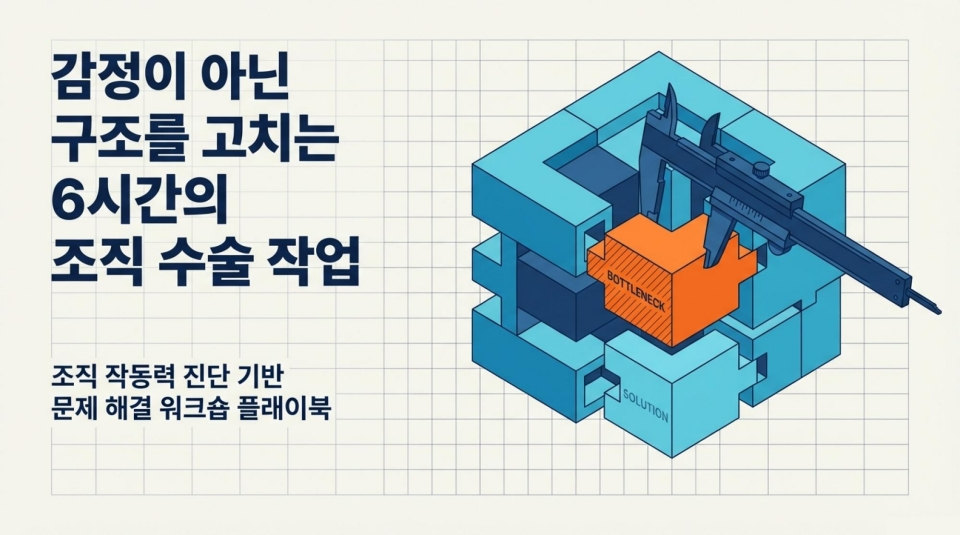
이 워크숍의 핵심 메시지는 단 하나입니다. "감정이 아닌 구조를 고친다." 구성원들의 불만이나 의욕 부족이 문제가 아니라, 조직이 제대로 작동하지 못하게 만드는 구조적 결함이 진짜 원인입니다. 6시간이라는 제한된 시간 안에 조직의 핵심 병목을 정확히 진단하고, 실행 가능한 구조 개선안을 도출하는 '조직 수술' 방식의 집중 워크숍입니다. 감정적 토로나 막연한 토론이 아닌, 데이터에 기반한 구조적 접근으로 조직의 실질적인 변화를 이끌어냅니다.
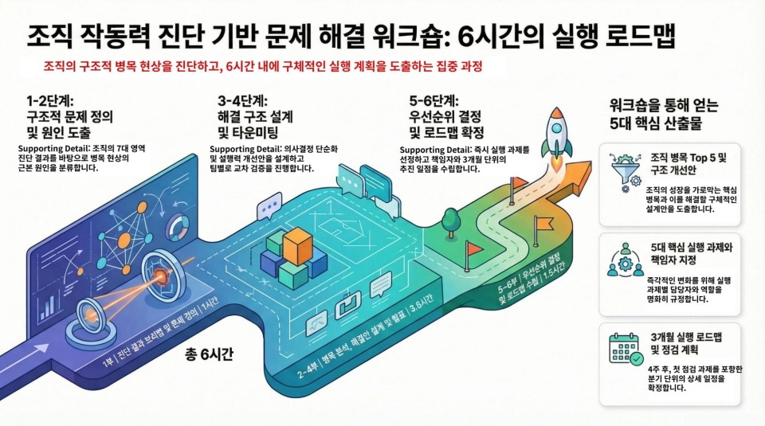
워크숍은 총 6단계로 구성된 명확한 실행 로드맵을 따릅니다. ① 진단 데이터 브리핑으로 현황을 공유하고, ② 핵심 병목 3가지를 선정합니다. 이어서 ③ 구조적 원인을 분석한 뒤, ④ 해결 구조를 설계합니다. 그 다음 ⑤ 타운미팅 방식으로 팀 간 발표와 대안 충돌을 거치고, 마지막으로 ⑥ 실행 과제와 책임자를 확정합니다. 각 단계는 구체적인 산출물을 목표로 설계되어 있어, 워크숍 종료 후 즉시 실행에 옮길 수 있는 결과물을 확보하게 됩니다.
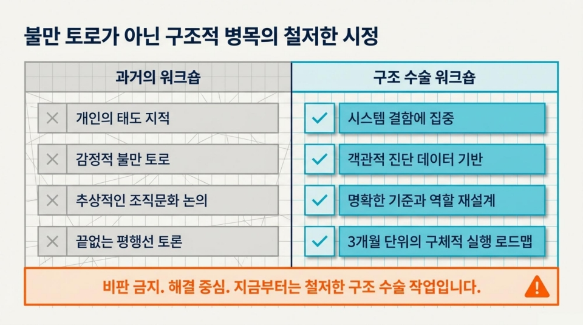
기존 워크숍은 참가자들이 불만을 토로하고, 분위기가 일시적으로 고양되었다가 아무것도 바뀌지 않는 패턴을 반복해 왔습니다. 반면 이 '구조 수술 워크숍'은 근본적으로 다릅니다. 문제의 표면이 아닌 구조적 병목을 파고들며, 감정적 호소 대신 데이터와 분석을 기반으로 대화합니다. 참가자들은 문제의 원인을 개인이 아닌 시스템에서 찾고, 실행 가능한 구조적 해결안을 직접 설계합니다. 이 워크숍은 '다녀온 것'이 아니라 '달라진 것'을 만들어내기 위해 설계되었습니다.
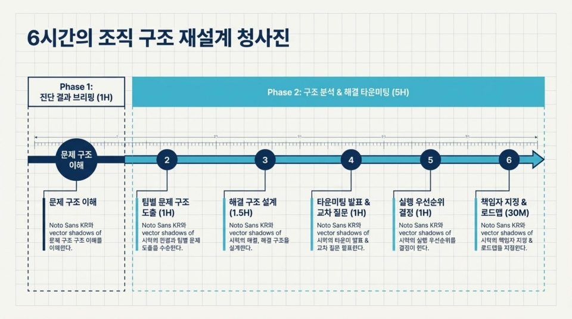
워크숍은 크게 두 단계로 나뉩니다. Phase 1(1시간)은 준비 단계로, 진단 데이터 브리핑과 조직 현황 공유를 통해 모든 참가자가 같은 출발선에 서도록 합니다. Phase 2(5시간)는 본격적인 구조 수술 작업입니다. 팀별로 병목 선정, 원인 매핑, 해결 구조 설계를 순서대로 진행하며, 타운미팅을 통해 팀 간 아이디어를 교차 검증합니다. 마지막으로 실행 과제를 압축·확정하고 책임자를 지정하여 워크숍의 결과가 현장에서 실행될 수 있도록 마무리합니다.
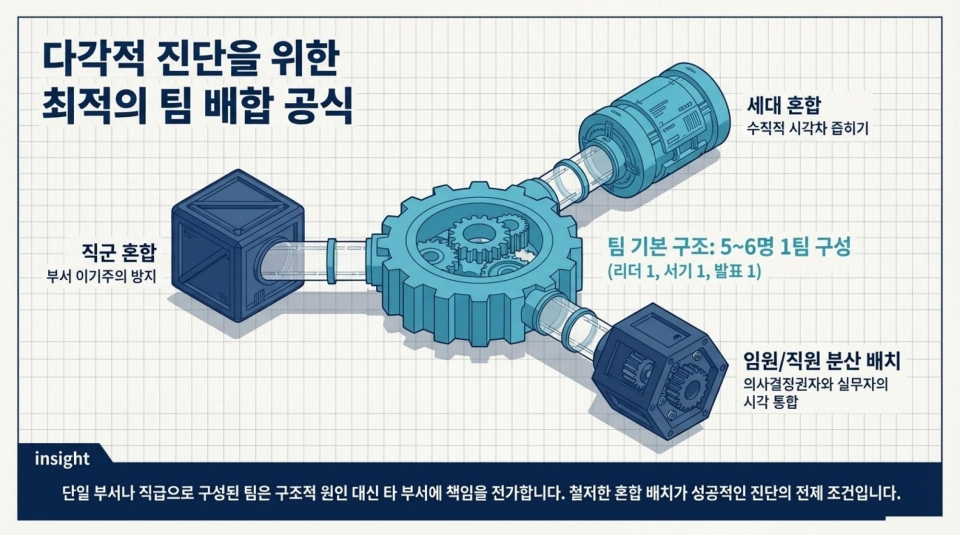
워크숍의 효과는 팀 구성에서부터 시작됩니다. 같은 직군끼리 모이면 편향된 시각이 형성되고, 같은 세대끼리 모이면 조직 전체의 문제가 보이지 않습니다. 이를 방지하기 위해 직군 혼합(기획·운영·지원 등 다양한 역할 배합), 세대 혼합(경력 연차의 다양성 확보), 그리고 임원과 직원의 적절한 분산 배치를 원칙으로 합니다. 이러한 최적의 팀 배합 공식은 다각적 관점에서 조직의 구조적 문제를 입체적으로 바라볼 수 있게 하며, 더 풍부하고 실질적인 해결안을 도출하는 기반이 됩니다.
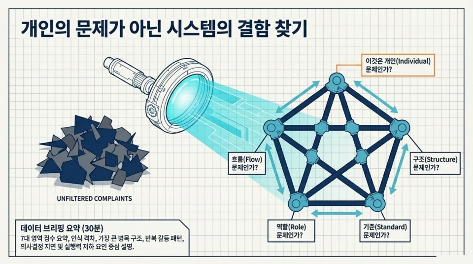
워크숍 시작 직전, 에스비컨설팅이 사전에 수집·분석한 조직 진단 데이터를 전체 참가자에게 브리핑합니다. 이 단계는 매우 중요합니다. 개인의 경험이나 감정이 아닌, 객관적 데이터를 공통의 출발점으로 삼기 때문입니다. 데이터 브리핑에는 조직 작동력의 7대 영역별 점수, 구성원 응답 패턴, 주요 병목 징후 등이 포함됩니다. 모든 팀이 동일한 데이터를 공유함으로써 논의의 질이 높아지고, 특정 개인이나 팀을 비난하는 대신 시스템 차원의 문제를 객관적으로 바라보는 환경이 조성됩니다.
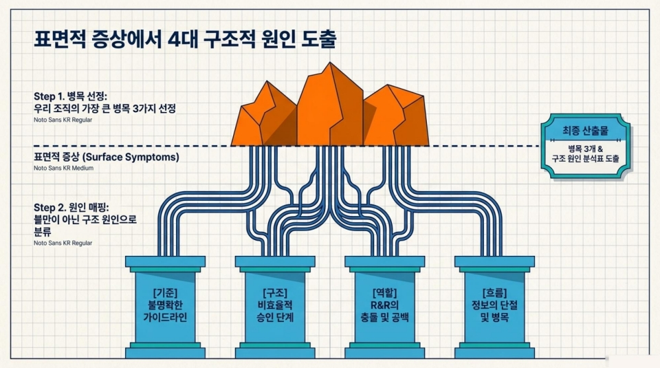
눈에 보이는 증상(Surface Symptoms)은 진짜 문제가 아닙니다. 이 단계에서는 표면적 증상 뒤에 숨은 4대 구조적 원인을 체계적으로 도출합니다. Step 1에서 조직의 가장 큰 병목 3가지를 선정하고, Step 2에서 각 병목의 원인을 단순 불만이 아닌 구조적 분류로 매핑합니다. 원인은 [기준] 불명확한 가이드라인, [구조] 비효율적 승인 단계, [역할] R&R의 충돌 및 공백, [흐름] 정보의 단절 및 병목 등 4가지 카테고리로 분류됩니다. 이 과정의 최종 산출물은 병목 3개와 구조 원인 분석표입니다.
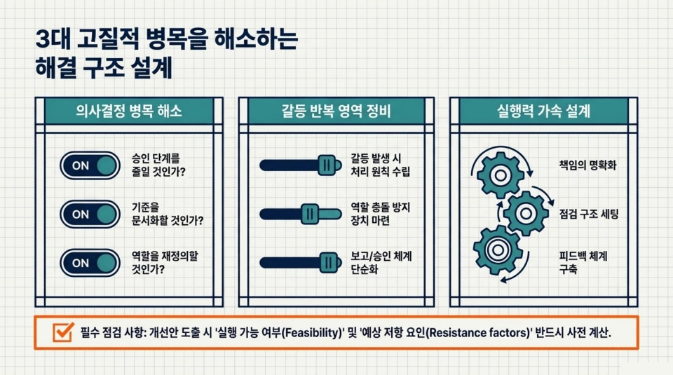
병목의 원인이 파악되면, 이를 실제로 해소할 구조를 설계합니다. 세 가지 영역에서 동시에 접근합니다. 첫째, 의사결정 병목 해소: 불필요한 승인 단계를 줄이고, 기준을 문서화하며, 역할을 재정의합니다. 둘째, 갈등 반복 영역 정비: 갈등 발생 시 처리 원칙을 수립하고, 역할 충돌 방지 장치를 마련하며, 보고·승인 체계를 단순화합니다. 셋째, 실행력 가속 설계: 책임을 명확화하고, 점검 구조를 세팅하며, 피드백 체계를 구축합니다. 모든 개선안은 실행 가능 여부와 예상 저항 요인을 반드시 사전에 검토합니다.
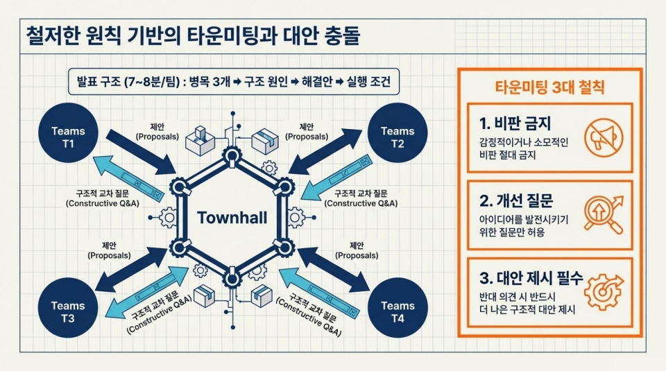
각 팀이 설계한 해결안은 타운미팅 형식으로 전체 참가자 앞에서 발표됩니다. 발표 구조는 팀당 7~8분으로, 병목 3개 → 구조 원인 → 해결안 → 실행 조건 순서로 진행됩니다. 타운미팅에는 3가지 철칙이 있습니다. ① 비판 금지: 감정적이거나 소모적인 비판은 절대 허용하지 않습니다. ② 개선 질문: 아이디어를 발전시키는 방향의 질문만 허용합니다. ③ 대안 제시 필수: 반대 의견을 낼 때는 반드시 더 나은 구조적 대안을 함께 제시해야 합니다. 이 철칙이 건설적이고 생산적인 충돌을 만들어냅니다.
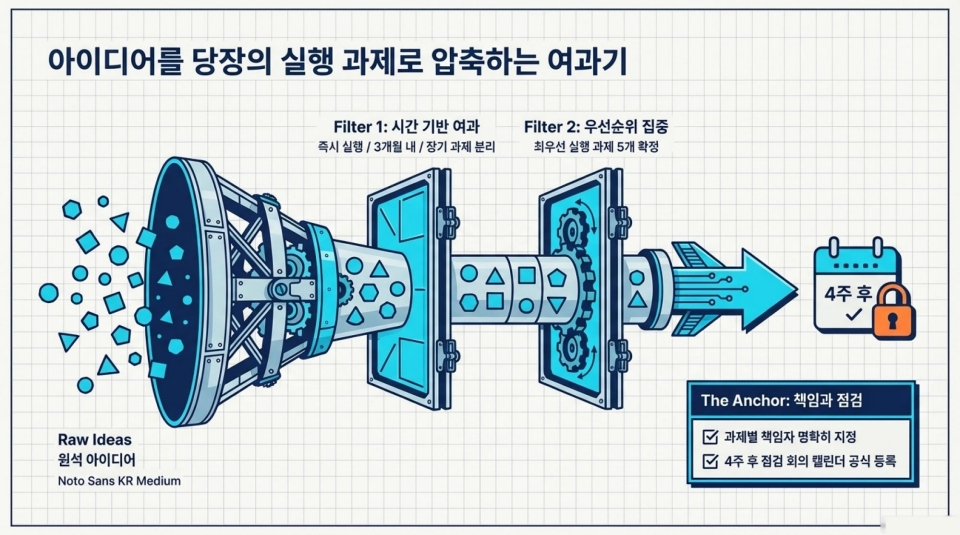
타운미팅에서 쏟아진 수많은 아이디어는 여과기를 통해 즉시 실행 가능한 과제로 압축됩니다. Filter 1은 시간 기반 여과로, 모든 아이디어를 즉시 실행 / 3개월 내 실행 / 장기 과제로 분류합니다. Filter 2는 우선순위 집중으로, 최우선 실행 과제 5개를 최종 확정합니다. 이렇게 선정된 5개 실행 과제에는 반드시 책임자를 명확히 지정하고, 4주 후 점검 회의 일정을 공식 캘린더에 등록합니다. 이 '앵커(The Anchor)' 장치가 워크숍의 결과가 실제 변화로 이어지도록 보장합니다.
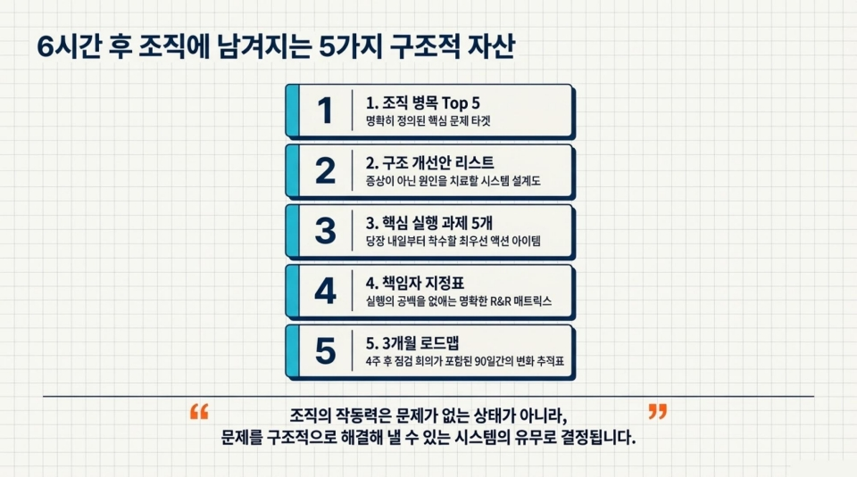
6시간의 워크숍이 끝나면 조직에는 5가지 구조적 자산이 남습니다. ① 조직 병목 Top 5: 명확히 정의된 핵심 문제 타깃. ② 구조 개선안 리스트: 증상이 아닌 원인을 치료할 시스템 설계도. ③ 핵심 실행 과제 5개: 당장 내일부터 착수할 최우선 액션 아이템. ④ 책임자 지정표: 실행의 공백을 없애는 명확한 R&R 매트릭스. ⑤ 3개월 로드맵: 4주 후 점검 회의가 포함된 90일간의 변화 추적표. "조직의 작동력은 문제가 없는 상태가 아니라, 문제를 구조적으로 해결해 낼 수 있는 시스템의 유무로 결정됩니다."